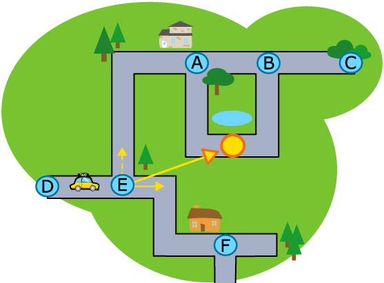

自動駕駛的計程車
一台不需要人類駕駛的計程車上市了！它只要根據以下三個規則，就可以順利將乘客送達目的地：
- 沒有叉路時，持續沿著路前進。
- 當遇到有叉路的路口時（在地圖上以英文大寫字母標示），判斷每條叉路與目的地所形成的夾角，並選擇夾角較小的那條路前進。
- 遇到死路時就迴轉。
舉例來說，下圖中計程車要前往黃色圓圈的位置，當計程車沿著路走到達標示為E的路口時，它有兩個選擇：直走（實線箭頭）或左轉（虛線箭頭）。當計程車比較實線箭頭和虛線箭頭與黃色圓圈的夾角時，可以發現實線箭頭與黃色圓圈所形成的夾角較小，因此計程車會選擇直走前進。

請問地圖上計程車從目前位置（D、E中間）到目的地（黃色圈圈位置）的路程中，經過的路口按先後順序排列為何?（請依序寫出各路口的代表英文字母，如：ABC）（若某個路口經過不只一次，需要在每次經過路口時寫出該路口英文字母）。